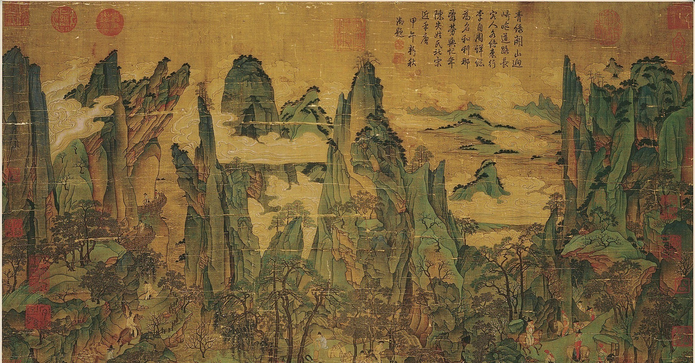

About the Tang dynasty
The Tang dynasty (/tɑːŋ/; Chinese: 唐朝) or the Tang Empire was an imperial dynasty of China that ruled from 618 to 907, with an interregnum between 690 and 705. It was preceded by the Sui dynasty and followed by the Five Dynasties and Ten Kingdoms period in Chinese history. Historians generally regard the Tang as a high point in Chinese civilization, and a golden age of cosmopolitan culture. Tang territory, acquired through the military campaigns of its early rulers, rivaled that of the Han dynasty. The Tang capital at Chang'an (present-day Xi'an) was the most populous city in the world in its day.
Ancient chinese painting
The Tang dynasty emperors
- Emperor Gaozu 618-626 (first)
- Emperor Taizong 626-649
- Emperor Xuanzong 712-756
- Emperor Ai 904-907 (last)
Protectorates & Tributaries
The 7th and first half of the 8th century are generally considered to be the era in which the Tang reached the zenith of its power. In this period, Tang control extended further west than any previous dynasty, stretching from north Vietnam in the south, to a point north of Kashmir bordering Persia in the west, to northern Korea in the north-east. Click on the names below to read about them: